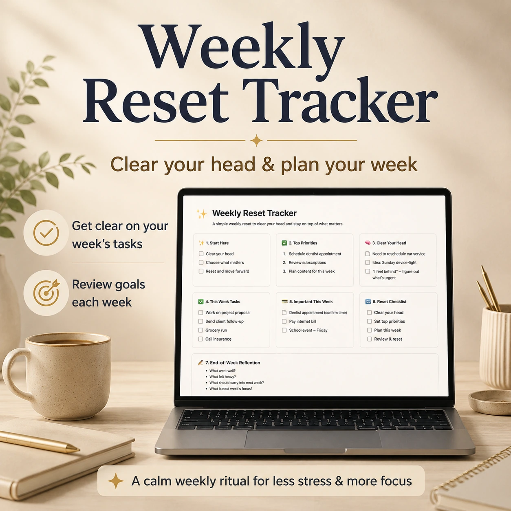

Choose what matters
Pick the important outcomes and top priorities before the week becomes random tasks.
Weekly Reset Tracker helps you clear your head, choose top priorities, review open loops, track important items, and reset the week in a simple Notion workspace.

Pick the important outcomes and top priorities before the week becomes random tasks.
Collect lingering tasks, reminders, follow-ups, and life admin items that need attention.
Use a simple weekly rhythm instead of turning planning into another complicated system.
Use it at the start of the week to choose priorities and clear mental clutter.
Use it to surface bills, paperwork, calls, errands, and follow-ups.
Use it when you want direction without a heavy productivity system.
No. It is focused on weekly reset, priorities, loose ends, and simple planning.
Yes. You can adjust the views, prompts, properties, and reset rhythm inside Notion.
People who want a calmer weekly planning flow without building a complicated workspace.
Use one clean Notion tracker for priorities, important items, and weekly review.